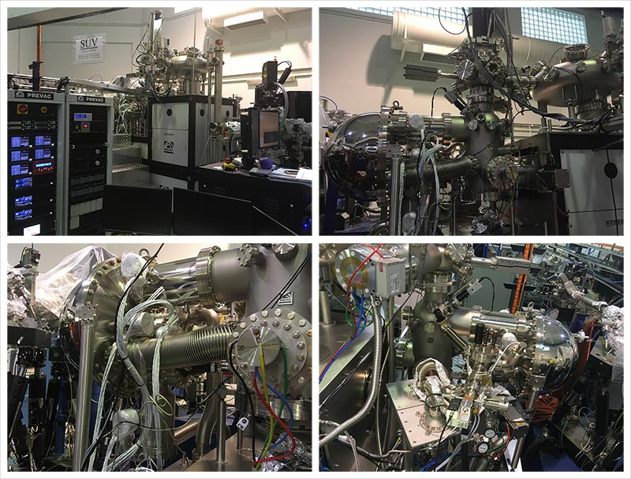

About ARPES system
- The ARPES system comprised of Scienta-Omicron DA30L hemispherical electron analyzer.
- Base pressure of the system is \sim 1 \times 10^{-10} mbar.
- A Scienta VUV-5k helium discharge lamp with monochromator is used as photon source.
- Mott spin detectors are also available for spin-resolved band measurement.
- The manipulator can be cooled down using either liquid nitrogen (sample temperature ~90 K) or liquid helium cryogen.
- Single crystalline sample can be exfoliated or cleaved in the load-lock chamber (pressure ~ 5 \times 10^{-8} mbar).
- Thin film samples can be grown in-situ using PLD.
- Certain samples can be prepared by argon sputtering and annealing.
